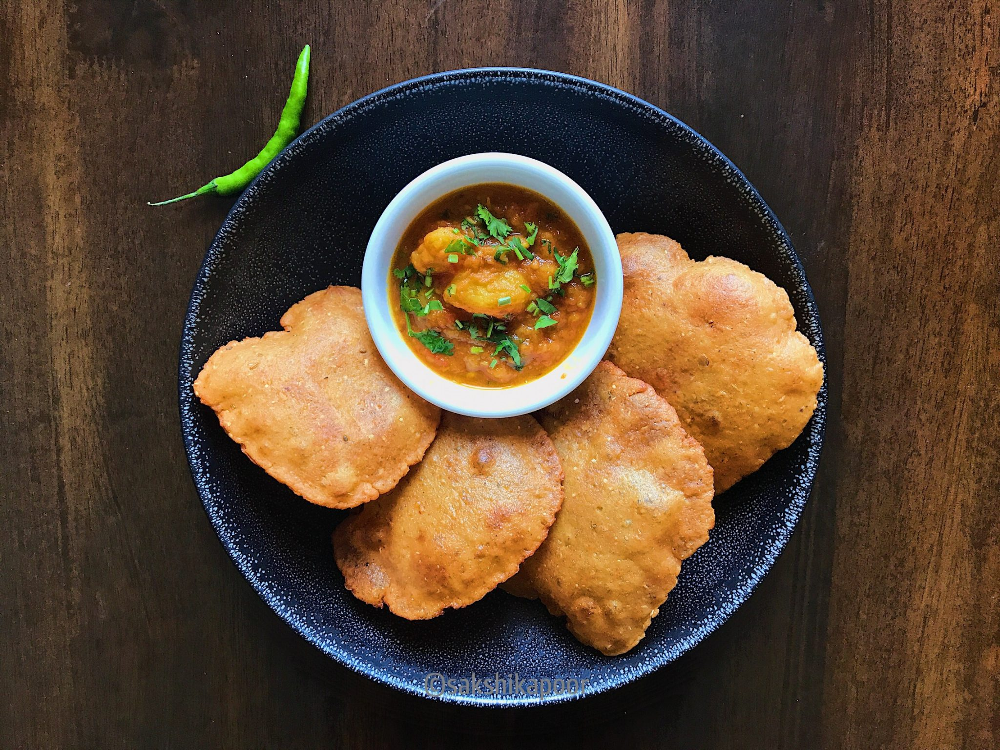

Aloo Puri

A unique and spicy way to make the traditional deep-fried indian bread with mashed and boiled potatoes.
It is healthy, tasty and more importantly a filling meal due to the use of potatoes and its starch in it. These deep-fried poori’s are loaded with spice and
flavour and can be relished as it is, but goes very well when served with a choice of spicy curry or sabji.
Ingredients
- 3 aloo / potato, boiled
- 2 cup wheat flour / atta
- 2 tbsp rava / semolina, fine
- ¼ tsp turmeric
- ½ tsp chilli powder
- ½ tsp cumin powder
- ½ tsp garam masala
- ¼ tsp ajwain / carom seeds
- 1 tsp kasuri methi, crushed
- ½ tsp salt
- water, for kneading
- oil, for frying
Steps:
- Firstly, in a large bowl take 2 cup of wheat flour and 2 tbsp rava.
- Also add ¼ tsp turmeric, ½ tsp chilli powder, ½ tsp cumin powder, ½ tsp garam masala, ¼ tsp ajwain, 1 tsp kasuri methi and ½ tsp salt.
- Mix well making sure all the spices are well combined.
- Further, add mashed 3 potatoes and mix well.
- Add water and start to knead the dough.
- Make sure to knead the dough adding water as required. also note that aloo will release the moisture, so add water accordingly.
- Knead to a smooth and tight dough.
- Also, add 2 tbsp oil and knead the dough.
- Now take a ball and roll using a rolling pin.
- Roll to slightly thick thickness.
- Drop the rolled dough into the hot oil.
- Press until the puri puffs up and splash oil to puff up fully.
- Flip over and fry until it turns golden brown.
- Finally, drain off the aloo poori and is ready to enjoy with sabzi or pickle.